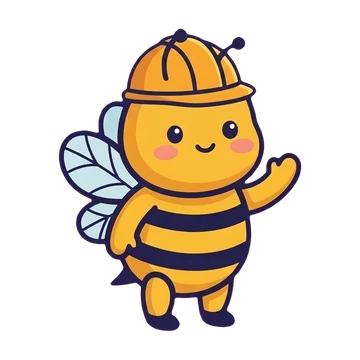
學校的單字表，變成闖關道路
- 拍照、從相簿選（一次最多 10 張，每張變成一關）、貼上文字，或直接打字
- 用 Apple 內建的文字辨識在裝置上讀出單字，照片不保存、不上傳
- 家長確認單字後，就是孩子一關一關往前走的「我的道路」
- 道路可以存成檔案，分享給同學的家長一起練
拼字蜂巢 · 給國小孩子的英文拼字 App
拍下學校發的英文單字表，就變成孩子專屬的闖關道路。跟著小蜜爬上蜂巢地圖：聽得出來、拼得出來、比賽拿穩，一格一格收集星星。
iPad・iPhone｜沒有廣告・不用帳號・一次買斷・沒有網路也能練習
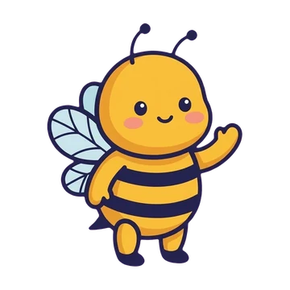
聽單字、看字卡、動手拼。孩子要做的事很簡單，一格一格慢慢累積會拼的字。

學校的單字表，變成闖關道路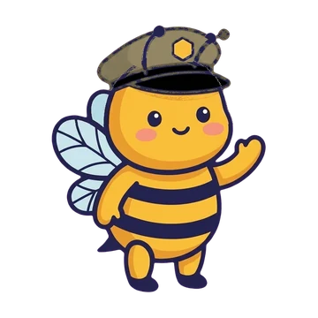
蜂巢冒險地圖與三顆星一格 10 個字，從花園草地出發，一路往上爬。每一格有三顆星：
拿到第一顆星就會打開下一格，孩子不會卡關；星星只升不降。
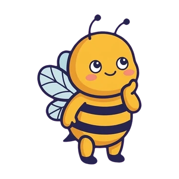
拼字練習，有提示慢慢來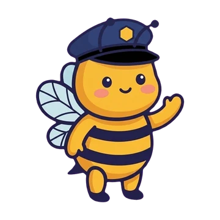
拼字比賽與年級比賽字包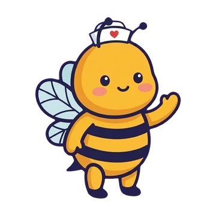
會念給你聽的單字卡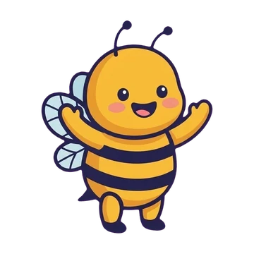
更多玩法・蜂巢挑戰以下都是 App 的實際畫面（iPhone）。
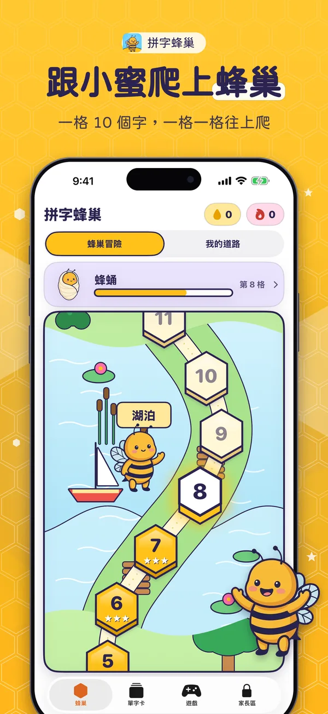
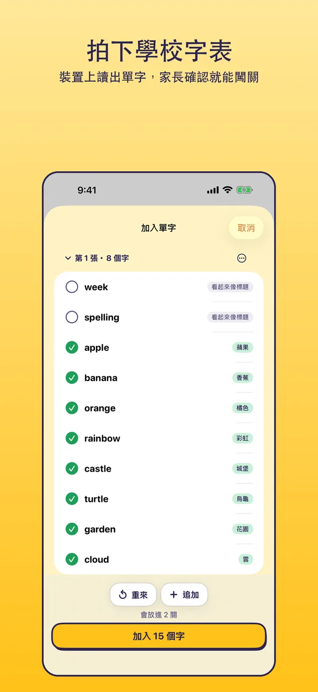
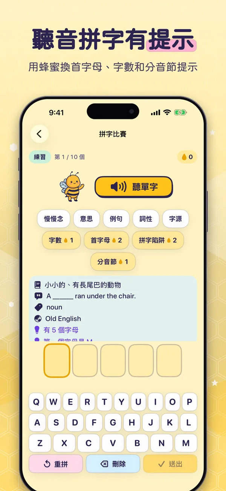
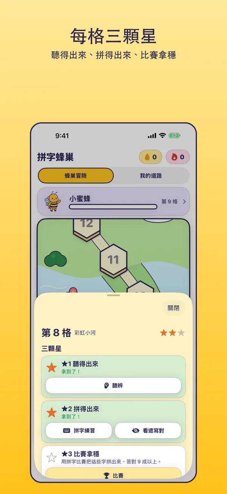
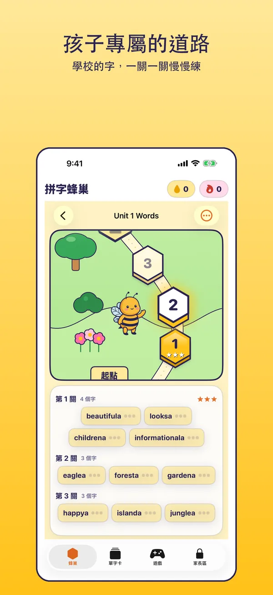
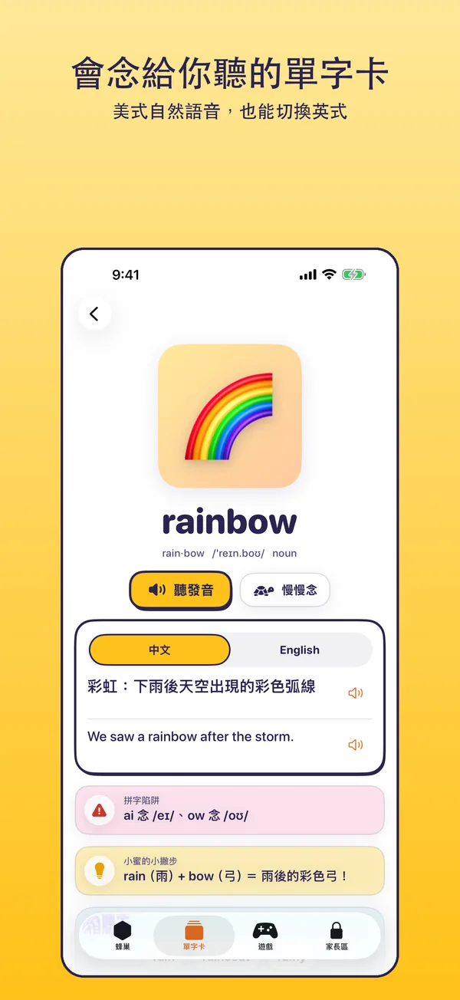
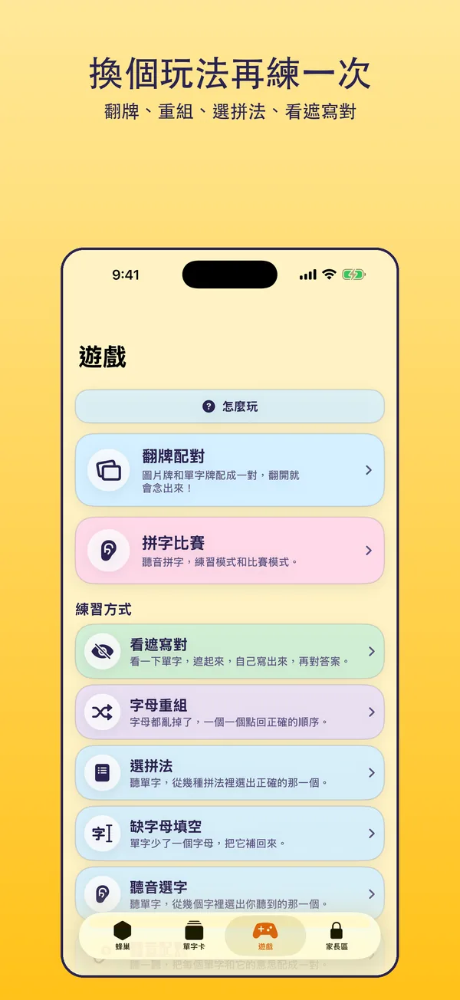
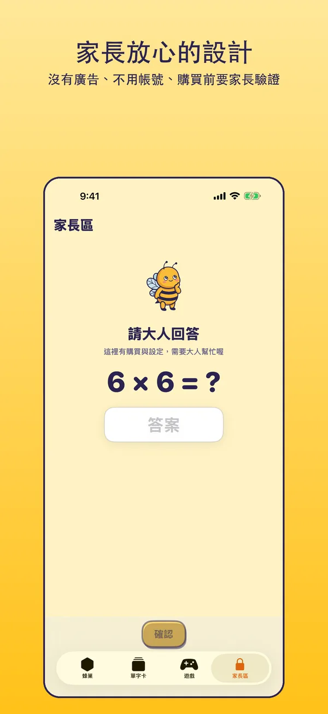
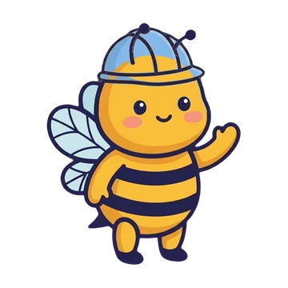
我們想做一個自己也放心交給孩子的 App。下面這些，是一開始就決定好的事。
這個網站也一樣：不放追蹤碼、不載入任何第三方字型或資源。詳見隱私權政策。
拼字蜂巢是給國小孩子練習英文單字拼寫的 App。小蜜只鼓勵、不責備，拼不出來時她會說：「差一點點！這個字很調皮，我們再聽一次？」
不需要。單字、圖片和音檔都在 App 裡，沒有網路也能練習。
免費版可以學會 300 個字（孩子自己加入的字也算在內），所有玩法都能用。學會 300 個字以後，開始練習時會出現 Pro 完整版的說明，由家長決定要不要購買。詳見 Pro 完整版。
不會。單字是用 Apple 內建的文字辨識，只在這台裝置上讀出來；照片不保存、不上傳。
可以。拼字蜂巢以 iPad 優先設計，也支援 iPhone。
有。介面語言可以在 App 內切換繁體中文或 English。